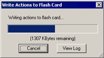

|
|
MySkit Tutorial #4 - Perform Skits w/YAPT!
|
|
Contents of this website are freeware and/or copyrighted material, and may not be sold
under any circumstances.
Email: dogsbody@dogsbodynet.com
Home:
https://dogsbodynet.com
|
Perform Skits on PLEO using YAPT!
The behavior generated in the previous
tutorial was very simple. PLEO just stands around until
touched somewhere.
To create a
more realistic personality for PLEO, this tutorial briefly covers using
AiboPet's YAPT
utility. As before, any
flash card personality is temporary (for fun only).
Remove the flash card and PLEO is his old self unchanged.
Our goals are:
Let's get started!
|
(1)
|
Download AiboPet's YAPT
program.
|
|
|
|
(2)
|
Insert a flash card (at least 16
MBytes) into your SD card reader. Oops, don't have one? Any
of these should work fine.
NOTE: If your card originally came with a camera, reformat it on
your PC before continuing. Camera formatted cards use a
non-standard setup that can cause problems.
|

|
|
|
(3)
|
Install YAPT onto the flash
card. Do not just copy the ZIP file, since that won't
work.
ZIP files are compressed. You must use something like WinZip
to "unzip" YAPT onto the flash card.
|
|
|
|
(4)
|
Open the flash card in Windows
Explorer. If you see "main.amx", "sensors.amx" and
"YAPT.exe", you're good to go!
|
|
|
|
|
|
(1)
|
Start MySkit & close any open skits.
Click on the toolbar "Write"
button.
|
 |
|
|
(2)
|
Now select the "action directory"
on your PC, where you've collected everything for your PLEO personality.
The picture (see right) shows selecting the Examples folder included
with MySkit.
|
|
|
|
(3) |
PMap may appear giving you the option to use MySkit's simple
behavior.
You can ignore this. Click OK without dragging anything.
NOTE: To stop PMap appearing entirely, you can disable
it from:
Edit Menu ->
Preferences -> Helper Tools.
|
|
|
|
(4)
|
MySkit compiles your action directory,
and
writes it to the flash card.
The files are quite large, so this might take several seconds.
|
 |
|
|
(5)
|
Once MySkit displays "Done!" the flash
card
is ready, or an error message if something went wrong.
If an error occurred, click on the "View Log"
button to see what happened.
Otherwise, click "OK" to close the dialog.
|
|
|
|
|
| 3.0
Using New Skits in YAPT |
(1)
|
Start AiboPet's YAPT
utility on the
flash card. The YAPT utility allows creating simple PLEO
personalities.
Double click on "YAPT.EXE"
from Windows Explorer.
|
|
|
|
(2)
|
Click the "Add"
button. YAPT will lists your custom/new skits.
|
|
|
|
(3)
|
Select one of your skits, or choose a different category and pick from
hundreds in its reference
libraries. Use the "Preview"
button to review them.
Once you've made a choice, click the "Add
Action" button.
|
 |
|
|
(4) |
You're done! Click
the large "Save program to SD card" button.
Once saving is complete, insert the flash card into PLEO.
Turn on PLEO and enjoy!
To restore PLEO's original personality, turn him off and remove the
flash card. He'll be his original self unchanged when
powered back on.
Got a question? Ask Dogsbody! |
|
|
|
|
Legalese: These programs are provided AS IS without any warranty, expressed or implied.
This includes without limitation the fitfulness for a particular purpose or
application. People using the software bear all risk
as to its quality and performance. The user of the software
is responsible for any damages whether direct, indirect, special,
incidental or consequential arising from a failure of these programs to operate in
any manner desired. Etc, etc...
"PLEO" is a trademark UGOBE, Inc.
|
|